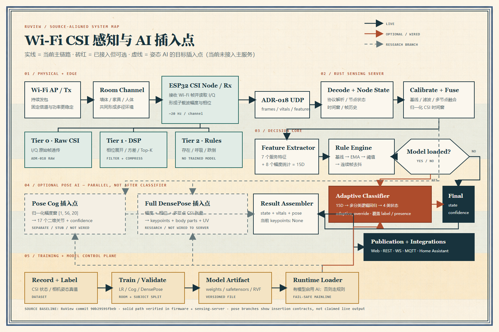

ESP32
Espressif chip family
微控制器芯片。可以理解成一台很小、很省电的计算机，自带 Wi‑Fi。RuView 让它负责接收 Wi‑Fi 数据包，并从中读取 CSI。
从 ESP32（一类自带 Wi‑Fi 的微控制器芯片）采集的 CSI（信道状态信息）复数波形，到“有人、在动、人体 17 个关节、身体表面区域”，一篇讲清 RuView 的 AI（人工智能）输入、模型、训练、输出、部署方式与真实完成度。
RuView 的核心，不是让 ESP32 像摄像头一样“拍到”人，而是把人体对无线信道造成的细微扰动变成可以计算的 CSI 时间序列，再用信号处理和机器学习把这串波形翻译成人能理解的状态。
最准确的一句话是：RuView 是一个“无线感知平台”。ESP32 负责采集 Wi‑Fi CSI，边缘固件和 Rust 服务负责清洗、校准与提取特征，AI 只在需要把复杂波形映射成“行为类别”或“人体姿态”时介入。
后面再次出现这些缩写时，就不再每次重复全称。拿不准时，可以回到这里，或查看文末的完整术语表。
微控制器芯片。可以理解成一台很小、很省电的计算机，自带 Wi‑Fi。RuView 让它负责接收 Wi‑Fi 数据包，并从中读取 CSI。
信道状态信息。它记录 Wi‑Fi 信号经过房间后，在多个子载波上分别衰减多少、相位改变多少。人体运动会让这些数值发生变化。
正交频分复用。把一条宽的 Wi‑Fi 信道拆成许多较窄的“小通道”同时传数据，这些小通道就是子载波。
同相分量和正交分量。这是表示无线复数信号的两个数。利用它们可以计算信号的幅度和相位。
数字信号处理。不用模型“猜”，而是用滤波、频谱、均值、方差和阈值等数学方法清洗并分析波形。
每分钟次数。心率 72 BPM 表示心脏每分钟跳约 72 次；呼吸 15 BPM 表示每分钟呼吸约 15 次。
接收信号强度指示。它大致表示“收到的 Wi‑Fi 有多强”，通常是一个总强度值，信息量比 CSI 少很多。
无线接入点。通常就是路由器里负责发射 Wi‑Fi 的部分。在 RuView 场景中，它为感知持续提供无线数据包。
因此，“RuView 用到 AI 吗？”答案是用到了，但不是每一步都用 AI，也不是仓库里出现模型代码就代表完整姿态识别已经接入主服务。从当前源码看，它同时保留了三条不同成熟度的 AI 路线：
输入是 15 维统计特征，模型是多分类逻辑回归，输出默认是 absent、present_still、present_moving、active。它能在本地录制少量样本后快速训练，并覆盖原来的规则分类结果。
输入是第一个节点 56 个子载波、20 帧的幅度窗口，经过三层一维卷积和两层全连接，输出 17 个二维关键点。仓库有真实权重，但现有公开基准仍很低，适合看作验证链路的原型。
它把幅度与相位翻译成伪图像，送入 ResNet 风格骨干网络，再并行预测关键点热图、24 个身体部位及 UV 坐标。训练和推理框架存在，但主 sensing server 目前没有完整接上这条模型链路。
model 参数。要继续追踪：模型输入在哪里生成、权重在哪里加载、推理函数是否在实时路径中被调用、输出是否真正写入 API。RuView 当前的完整姿态链路正是在最后几步还存在明显缺口。
先把整条管线看一遍，再深入模型，会容易很多。RuView 的完整思路可以概括为“激励信道、采集 CSI、做信号处理、构造模型输入、推理、发布语义”。
路由器、AP（Access Point，无线接入点）或另一个 Wi‑Fi 设备持续发包。直达路径与墙壁、家具、人体形成的反射路径叠加，构成一个随环境变化的多径信道。
ESP32 在接收 Wi‑Fi 帧时读取 CSI（Channel State Information，信道状态信息）：每个 OFDM 子载波对应一个复数信道估计，通常以 I/Q 表示。它不是照片，而是一组随时间变化的复数。
DSP（Digital Signal Processing，数字信号处理）指用数学方法处理数字波形。固件会做相位展开、均值/方差的流式统计、优选子载波、带通滤波、基线和阈值判断。呼吸、心跳、存在、跌倒的基础结果在这里可以不依赖神经网络完成。
原始 CSI、压缩特征或 Tier 2 生命体征数据按 ADR‑018 相关格式经 UDP 送入 Rust sensing server。ADR 是 Architecture Decision Record（架构决策记录），用于写清技术方案为什么这样设计；UDP 是一种只管快速发送、不保证每包必达的网络传输协议。
服务端完成解析、节点管理、时间窗口、校准、多节点融合、特征计算和质量评估，为规则算法或模型推理提供稳定输入。
根据任务选择 15 维特征分类、56×20 幅度窗口回归，或幅度+相位的完整 DensePose 模型。不同路线的输入、计算量、输出语义和成熟度完全不同。
最终结果通过网页、REST API、WebSocket、MQTT、Home Assistant 等方式暴露。REST API 是程序按网址请求数据的接口；WebSocket 是服务器与网页保持连接、持续推送数据的通道；MQTT 是物联网常用的轻量消息协议；Home Assistant 是开源智能家居平台。
在 OFDM（Orthogonal Frequency Division Multiplexing，正交频分复用）Wi‑Fi 中，一个宽带信道被拆成许多窄带子载波同时传输。接收端会估计每个子载波经历了多大的衰减和多大的相位偏移。某一时刻第 k 个子载波的 CSI 可写成复数 Hₖ = Iₖ + jQₖ；I/Q 是 In-phase / Quadrature（同相分量和正交分量），由它们可以计算幅度 |Hₖ| 与相位 ∠Hₖ。
每根柱子可以理解为一个子载波的幅度，柱子内部的小斜线代表相位。人体移动、呼吸或姿势变化会同时扰动多个子载波，而且这种扰动带有时间结构。
AI 的工作不是识别某一根柱子，而是学习“很多子载波在一段时间内怎样一起变化”。
这也解释了为什么模型输入通常是一个窗口而不是单帧：单帧更像无线环境的一个瞬时快照，而走路、呼吸、坐下、跌倒都需要通过时间上的连续变化来区分。
RuView 不是“ESP32 把数据直接送进一个大模型”。它更像一套分层的感知系统：无线链路制造可观测信号，ESP32 负责采集与低成本处理，Rust 服务负责时间窗、校准、融合和规则判断；AI 以可选分支插入不同位置，并分别解决“粗状态分类”与“人体姿态恢复”两类问题。

点击查看 1536 × 1024 原图 ↗在线自适应分类器已经进入 sensing server 的实时状态路径；Pose Cog 和完整 DensePose 则是两条不同复杂度的姿态分支。它们共享前面的 CSI 采集与校准基础，但输入张量、输出语义、运行位置和当前完成度不同。
AP 或另一个 Wi‑Fi 设备持续发包。直达波与墙壁、家具、人体反射波叠加，形成随环境变化的多径信道。这里的输出不是图像，而是接收端能够估计的信道变化。
Input: packetsWi‑Fi 驱动读取 CSI。Tier 0 保留原始 I/Q；Tier 1 做相位展开、在线统计、Top‑K 和压缩；Tier 2 增加呼吸、存在和跌倒等规则。Tier 2 固件没有训练神经网络。
Firmware原始帧、压缩帧、特征或生命体征按 ADR‑018 相关格式通过 UDP 发送。UDP 只解决低延迟搬运，不负责校准、分类或姿态推理。
ADR-018wifi-densepose-sensing-server 解析数据包，维护每个节点的历史帧、RSSI 和状态，完成基线学习、滤波、多节点融合、时间窗构造与特征提取。
规则引擎先产生 absent、present_still、present_moving、active。若加载自适应模型，再用 15 维特征覆盖粗状态；若接入姿态模型，则从 CSI 时间窗并行产生关键点或 DensePose 输出。
Rules first结果组装器把状态、生命体征、节点质量和可选姿态写入统一结果，再通过网页、REST API、WebSocket、MQTT 与 Home Assistant 暴露给上层应用。
Web / REST / WS这里不是两个算法同时投票，而是规则 → 可选分类器覆盖。规则永远提供基础结果；分类器只有在模型已经加载时才执行，并成为最终粗状态的决定者。
解析新 CSI 帧，写入节点历史；得到当前子载波幅度、RSSI 和可用于频域分析的连续窗口。
计算方差、运动/呼吸频带功率、频谱总功率、主频率、变化点和幅度分布统计。
扣除环境基线，EMA 平滑，再按阈值产生四档状态；要求连续多帧一致才切换，避免边界抖动。
adaptive_override
存在模型时，将 7 个服务特征和 8 个幅度统计组成 15D 向量，用多分类逻辑回归重新给标签。
写入最终 motion_level、presence 和 confidence，再和生命体征、节点信息一起送往 API 与网页。
步骤 04 直接跳过。规则结果就是最终结果，所以 RuView 在没有任何训练文件时仍能完成基本存在与活动等级判断。
模型覆盖动作标签和 presence；最终置信度采用 0.7 × 模型置信度 + 0.3 × 规则置信度。分类器改变的是边界，不会增加“走路、吃饭”等新语义。
这两个模型都应连接在“CSI 已经校准、归一化并形成时间窗”之后，以及“结果组装与接口发布”之前。它们不需要先得到 absent 或 active 才能推理，粗状态最多可以作为节省计算的门控条件，而不是姿态网络的输入。
取第一个感知节点的 56 个子载波幅度，维护 20 帧窗口，然后运行轻量 Conv1d 网络。按照现有组件形态，它更像 sensing server 旁边的 sidecar（伴随进程）：通过 /api/v1/sensing/latest 读取数据，而不是嵌入服务器内部。
[1, 56, 20] 幅度窗[17, 2] 二维关节坐标需要比 Cog 更丰富的输入：幅度、相位、天线路径、时间窗口，理想情况下还包括多节点融合。translator 先把 CSI 翻译成空间张量，骨干和三个输出头再产生关键点热图、身体部位和 UV 表面坐标。
两条姿态 AI 是并行分支，不是分类器的后续步骤。分类器回答“房间处于哪一种粗状态”；Cog 和 DensePose 回答“人体关节或身体表面在哪里”。把它们串起来会错误地让 4 类标签成为姿态模型输入，也会丢掉姿态恢复真正需要的 CSI 时间与空间细节。
firmware/esp32-csi-node
采集 CSI，执行 Tier 0–2 边缘管线，并发送原始帧、压缩帧、特征或生命体征数据。存在与跌倒主要是校准阈值和相位规则。
Live foundationwifi-densepose-sensing-server
系统中枢：协议解析、节点状态、时间窗、基线、融合、特征、规则分类、Web/API 发布和模型加载入口都在这里汇合。
Live runtimeadaptive_classifier.rs
把 15 维特征送入多分类逻辑回归；实时路径通过 adaptive_override 覆盖规则的粗状态标签。
cog-pose-estimation
轻量 17 关键点组件，面向树莓派/Cognitum 侧车部署。当前能表达目标接口，但不是主 sensing server 的内置推理阶段。
Separate / weak / stubwifi-densepose-train + nn
提供 CSI translator、网络骨干、DensePose 输出头、训练损失和多后端推理抽象；还缺主实时服务的完整依赖与输出接线。
Architecture / researchREST / WebSocket / MQTT / HA
消费统一结果。当前主服务多处仍明确写入 pose_keypoints: None，所以网页出现骨架外形不等于已经有真实 CSI 姿态模型输出。
RuView 的 ESP32 固件分为 Tier 0、Tier 1、Tier 2。Tier 在这里就是“处理等级”：数字越大，ESP32 本地完成的工作越多。这里有很多“检测”和“估计”，容易让人误以为都由 AI 完成。源码给出的答案更朴素：主要是数字信号处理、在线统计和规则阈值。
| 层级 | 主要工作 | 是否训练模型 | 输出用途 |
|---|---|---|---|
| Tier 0 | 原始 CSI 透传，尽量保留 I/Q 数据 | 否 | 服务端研究、训练数据采集 |
| Tier 1 | 相位展开、Welford 算法（一边接收数据、一边更新均值和方差）、选择 top‑K（选出评分最高的 K 个）子载波、压缩 | 否 | 降低带宽，提供较稳定的特征 |
| Tier 2 | 呼吸/心跳带通滤波、存在阈值、跌倒相位加速度、多目标槽位启发式 | 否 | 超低延迟本地感知和生命体征包 |
| AI 路线 | 从人工特征或 CSI 时间窗学习到语义标签、关键点、身体部位 | 是 | 替代复杂规则或完成更高维的映射 |
它利用已知的物理和频率规律。例如成年人呼吸大致落在低频范围，心跳落在更高一点的频段；对相应频带滤波，再寻找周期峰值，就可以估算 BPM（Beats Per Minute，每分钟次数）。
确定性规则 · 易解释 · 计算量小它从带标签数据里学习边界或映射。例如房间中的 15 个统计量怎样组合最像“静止有人”，或者 56×20 的波形怎样映射为 17 个关节坐标。
数据驱动 · 能拟合复杂关系 · 需要训练这是 RuView 实时链路里最容易被误解的一层。ESP32 和 Rust 服务都各自包含规则；只有加载了自适应模型，最后一步才会调用 AI。下面把源码中的先后顺序摊开来看。
adaptive_override
模型存在时，用 15 维特征重新给标签；模型不存在时，这一步直接跳过。
adaptive_override 是源码里的函数名，意思就是“用自适应模型覆盖原判断”。
Rust 服务端先学习安静房间的基线——也就是“没有明显人体动作时，系统本来会有多少波动”。它从当前运动分数中扣掉基线，再用 EMA（指数移动平均：新数据占一小部分、历史数据占大部分）让曲线不那么抖。
接着把平滑后的分数 sm 与几条阈值比较。阈值就是一条人为规定的分界线，并不是模型学出来的参数。
源码还单独用 sm > 0.03 设置 presence（是否存在），并要求新状态连续多帧一致后才切换。这个“去抖”过程能避免分数刚好在边界附近时，页面一秒显示有人、下一秒又显示没人。
服务端计算人数候选分数时，会先把不同量纲的特征压到 0–1，再做固定加权。它很像打分表，但权重写在代码里，不是神经网络训练出来的：
变化点是统计特征突然换了一种状态的时刻；运动频带功率是动作相关频率范围内的能量；频谱总功率是把时间波形拆成不同频率后，全部频率能量的汇总。注意：这是单独的“人数候选”评分示例，不是上面 sm 状态分档的同一个公式。
下面不只写结果，而是沿着“环境基线 → 数字证据 → 规则 → 输出”走一遍。为了便于理解，案例名称使用“坐着”“走路”等现实动作，但也会明确标出系统实际知道的范围。
系统并不是直接寻找一幅“人形图”，而是比较无线波动相对于安静房间增加了多少。
边界：输出 present_moving 不等于真正理解“走路”。挥手、搬椅子或多人轻微移动也可能产生相近分数。规则知道“波动变强了”，不知道动作的完整语义。
胸腔起伏会给 CSI 带来很弱但近似周期性的扰动。固件使用带通滤波：像只允许指定音域通过的筛子，保留约 0.1–0.5 Hz 的缓慢变化，尽量压低更慢的漂移和更快的动作。
0.25 Hz × 60 = 15 BPM
边界：这是一种周期估计，不是医疗诊断。大动作会淹没微弱呼吸信号，风扇等周期干扰也可能制造相似节奏，因此还要结合置信度、静止状态和时间窗口。
固件计算相邻相位变化的“速度”，再看这个速度改变得有多快；后者就是相位加速度。快速跌落往往会造成尖锐峰值，规则会把它与可配置阈值比较。
边界：人猛地坐下、重物掉落或设备被碰撞，也可能越过相同阈值而产生误报；很慢地滑倒又可能没有明显峰值。规则没有看见“人最终躺在地上”，高风险场景仍需要其他传感器或人工确认。
无线信号只知道环境是否在变化，不天然知道变化由谁造成。风扇、窗帘或扫地机器人，甚至微波炉工作周期和邻近 AP 发射功率变化，都可能让方差或变化点升高。
这就是误报：系统给出“有人/事件发生”的正面结果，但现实中并没有对应目标。自适应基线和本地 AI 可以降低某些固定干扰，不能保证消除所有未知干扰。
擅长：判断有无明显扰动、静止/移动强弱、估计周期性的呼吸和心率、发现突然冲击。不擅长：精确区分走路、坐下、吃饭、穿衣、举左手等语义动作，也不能单靠一个尖峰确认“这个人已经跌倒在地”。后者才是分类模型、姿态模型和多传感器融合要解决的问题。
如果把“AI 已经实际进入实时服务”作为标准，那么自适应分类器是最清晰的一条路线：能录数据、从文件名得到标签、训练、保存模型、加载模型，并在实时分类时覆盖原有结果。
固定阈值很难适应不同房间。卧室的墙体、AP 距离、家具布局、噪声、节点位置都可能和实验室不同。同一个“运动能量 0.4”，在一个环境中是人在缓慢移动，在另一个环境中可能只是风扇或邻居网络干扰。
自适应分类器的目标不是恢复人体骨架，而是用少量本地样本学会这个具体环境里的状态边界。默认类别是 absent、present_still、present_moving、active，同时支持从录制文件名称推导动态类别。
模型每次接收一个 15 维特征向量。前 7 维来自 sensing server 的聚合分析，后 8 维来自幅度分布统计。它不是直接把原始 I/Q 全部喂给网络，因此训练很快、模型很小。
这里并不是深层神经网络，而是多分类逻辑回归。先用训练集均值和标准差标准化 15 维输入，然后每个类别计算一个线性分数，最后通过 softmax 转成概率。softmax 是一种数学转换：把模型给各类别的原始分数变成总和为 100% 的概率。
模型小不等于不是 AI。关键在于 W 和 b 是从带标签数据中优化得到的，而不是人工写死。
训练使用 SGD（Stochastic Gradient Descent，随机梯度下降），也就是根据预测误差一点点调整模型权重。默认训练 200 个 epoch；一个 epoch 表示“全部训练样本完整学一遍”。batch size 32 表示每次拿 32 条样本算一次更新。初始 learning rate（学习率，也就是每次调整权重的步幅）约 0.1，并逐渐减小。模型连同类别名、标准化参数和权重保存在 data/adaptive_model.json 中。实时推理时，源码会把模型 confidence（置信度，表示模型对自己预测有多确定）与原分类置信度按约 70% / 30% 混合，然后用模型标签覆盖原标签。
输出至少包括类别名称与置信度。这种输出特别适合自动化：例如“有人移动”时开灯，“房间持续无人”时关闭空调，或者把类别通过 MQTT 送进 Home Assistant。
典型流程是在传感器已稳定工作的前提下，分别录制空房、静坐、行走和较剧烈活动。录制 ID 中写入可识别的标签词，停止录制后调用训练接口。下面是仓库接口所表达的工作流示意：
这条路线的优势是快、轻、容易针对单个房间适配；局限是它只给粗粒度类别，不能告诉你手臂在哪里，也容易在换房间或移动设备后失效。另外，训练函数报告的 accuracy 是对训练样本本身的正确率，并不等于独立测试集上的泛化能力。真正部署时应该留出一部分不参与训练的数据做验证。
RuView 还提供一个独立的 cog-pose-estimation 组件。Cog 可以理解为可单独安装和运行的小功能模块。它比完整 DensePose 简单得多，但闭环更具体：仓库里有 safetensors 权重文件（安全、只保存模型张量的文件格式）和 ONNX 模型（便于在不同推理框架间交换的通用格式），也记录了真实 Raspberry Pi 5 单板计算机上加载权重的基础运行验证。
这个模型只取第一个感知节点的幅度，不使用相位，也不融合多个节点。它从 sensing server 的 /api/v1/sensing/latest 轮询最新数据，默认约每 40 ms 一次，然后维护 20 帧历史窗口。
第一个 ESP32 节点
56 个子载波
batch（一次处理的样本数）× 子载波 × 时间帧
每个关节的 x、y 两个值
sigmoid 后归一化到 0–1
[1, 56, 20] 是一个 tensor（张量，也就是多维数字数组）的形状，可以这样读：一次推理 1 个样本，每个样本观察 56 个子载波，每个子载波保留最近 20 个时间点。若采样接近 25 Hz，这段窗口覆盖约 0.8 秒。
Conv1d（one-dimensional convolution，一维卷积）会像一个短小的滑动观察窗，沿时间轴寻找局部变化模式。三层卷积的膨胀率从 1、2 到 4，使模型不必堆很多层就能看到更长的变化范围。之后对时间维做平均池化，把 128 通道的时序特征压缩为一个向量；FC（Fully Connected，全连接层）再把所有输入与所有输出相连，最终回归 34 个数。sigmoid（把任意数压到 0–1 范围的函数）再把这些数变成 17 个关节的归一化二维坐标。
输入本质是“多个子载波随时间变化”，一维卷积适合寻找局部时间模式，参数量远小于大视觉网络，适合树莓派或边缘主机。
sigmoid 把每个输出限制在 0–1，表示画布中的归一化 x、y。上层需要结合显示区域尺寸转换为像素坐标。
模型输出 COCO 风格的 17 个二维关键点。COCO 原本是一个常用视觉数据集和标注规范；这里借用它规定的 17 个人体关节点顺序。把相邻关节连起来，就形成骨架。注意它不是相机拍摄的人像，也没有纹理、衣服或身份信息。
仓库的官方基准很坦诚：训练数据只有 1,077 个配对样本，来自约 30 分钟“坐在桌前”的单一场景，并按时间切分训练和评估。结果如下：
PCK 是 Percentage of Correct Keypoints（正确关键点比例），数值越高越好；MPJPE 是 Mean Per Joint Position Error（平均每关节位置误差），数值越低越好。这组结果意味着它已经证明“数据采集 → 训练 → 权重保存 → Candle 推理 → 边缘设备加载”这条工程链路可行，但还不能当作可靠的人体姿态产品。Candle 是 Rust 语言的机器学习推理框架。模型没有单独的置信度输出头；运行时使用固定的 0.185 作为典型置信度，这个值来自验证集 PCK@50，而不是当前这一帧的真实置信度。
轻量 Cog 只回归骨架坐标；完整 DensePose 路线更 ambitious：不仅找出 17 个关节，还希望判断像素属于哪个身体部位，并给出人体表面 UV 坐标。它试图把不可见的无线波形翻译成类似视觉模型可处理的空间表征。
默认训练配置以 56 个目标子载波、3×3 发射/接收天线路径和 100 帧时间窗口为核心。模型的 forward（前向计算，也就是把输入送进模型得到预测）接收幅度与相位两个张量，逻辑形态可理解为 [B, T×Tx×Rx, Nsub]：B 是一次处理的样本数，T 是时间帧，Tx/Rx 是发送/接收天线数量，Nsub 是子载波数量。不同硬件原始子载波数量可以不同，例如配置中提到 MM‑Fi 数据集 114、ESP32 HT20 56、HT40 约 192；HT20/HT40 表示约 20 MHz/40 MHz 的 Wi‑Fi 信道宽度。随后再通过插值或选择统一到模型需要的宽度。
CSI 天然不是二维照片：一条轴是天线/时间组合，一条轴是子载波。项目使用 modality translator（模态翻译器，把一种数据形式转成另一种表示）分别编码幅度和相位，再融合为 3×48×48 的空间张量。它不是实际 RGB（红、绿、蓝三颜色通道）图像，但形状像三通道小图，因此后续可以复用成熟的二维卷积骨干与解码头。
这里的骨干是 ResNet（Residual Network，残差网络）风格。“骨干网络”可以理解为模型的主干特征提取器；残差连接让信息可以跨过若干层直接传递，使较深网络更容易训练。
无线伪图像的高层空间特征
每个关节一张热图，峰值是最可能位置
24 个身体部位 + 1 个背景的 logits（softmax 前的原始分数）
24 个部位各自的 U、V 表面坐标
关键点热图不是直接输出 x、y，而是在 56×56 网格上为每个关节产生概率峰。部位分割为每个网格位置判断背景、头部、躯干、上臂等类别。UV 坐标是把人体三维表面“摊平”后的二维坐标，U、V 类似地图上的横纵坐标，使同一个身体部位可以有更细的表面位置。
训练中的 loss（损失）是衡量“预测与正确答案差多远”的数字，越小通常越好。设计上有四类损失：关键点热图用均方误差，身体部位用交叉熵，UV 坐标用 Smooth L1（一种对异常大误差不那么敏感的回归损失），另外还可加入迁移/蒸馏损失，让无线表征靠近教师模型。但当前默认 trainer（训练器）的主循环明确写着 no DensePose GT in this pipeline；GT 是 Ground Truth（真值标签、标准答案），这句话表示该管线没有完整 DensePose 标注，实际只计算关键点损失。
wifi-densepose-nn crate 提供 ONNX、tch 和 Candle 等后端抽象。crate 是 Rust 语言中的代码包；tch 是 Rust 调用 PyTorch 底层能力的库；“后端”指真正负责执行模型计算的引擎。泛型管线可以先运行 CSI translator，再产生 DensePose 输出。从组件层面看，模型执行框架是存在的。
但主 wifi-densepose-sensing-server 的依赖中没有接入该 crate；当前 main.rs 构造实时更新时多处仍是 pose_keypoints: None。训练 API 内虽有 infer_pose_from_model，在当前代码搜索中主要出现在模块自身和测试位置，没有成为主实时数据路径的完整调用。因此：
不能把“完整 DensePose 架构存在”直接等同于“主服务正在用训练好的 DensePose 模型实时输出姿态”。更准确的表述是：研究架构、训练模块和多后端推理基础设施已经形成，但产品主链路仍需完成模型接线、数据对齐和真实端到端验证。
CSI 本身没有“左手腕”“右膝盖”这样的标签。要训练姿态模型，必须在同一时刻知道无线信号是什么、真实人体姿态又是什么。RuView 的 ADR‑079 给出的核心方案是：训练时用相机当老师，部署时拿掉相机。
ESP32 记录无线信道变化，摄像头同时拍摄同一空间。两边都要保留可靠时间戳，否则模型会学到错位的对应关系。
视频帧通过 MediaPipe 等视觉姿态模型，转成 COCO 风格 17 个关节坐标。原视频不必直接作为无线模型输入。
把一段 CSI 窗口与对应时刻的关键点、部位或 UV 标签配对。必须处理采样率差异、丢帧、网络抖动与时钟偏移。
模型看到的输入只有幅度/相位或其特征；教师标签用于计算损失并反向传播，逐步更新权重。
保留从未参与训练的人员、时间段或房间做验证，计算 PCK、MPJPE、误报率和跨环境性能。
实际运行只需要 Wi‑Fi 发射端、ESP32 接收节点和推理设备。相机是训练阶段的老师，不是持续运行的传感器。
无线感知对环境非常敏感。相同的人做相同动作，只要 AP 或 ESP32 移动、信道改变、家具调整、门开关状态不同，CSI 分布就可能明显变化。一个在单一桌面场景表现不错的模型，不一定能迁移到卧室、走廊或另一套硬件。
高质量数据集至少要覆盖以下变化：
CSI + 摄像头教师 + 时间同步 + GPU/CPU 训练。隐私要求更高，因为存在视频；但可在受控环境中完成，并在生成标签后删除原视频。
持续 Wi‑Fi 数据包 + ESP32 CSI + 本地推理。无需相机，无需把原始波形上传云端，适合隐私敏感空间。
所谓“无摄像头感知”，准确含义应是推理部署时无需摄像头。若要训练高精度人体姿态模型，摄像头或其他高质量姿态传感器仍是非常实用的真值来源。
这两个问题直接决定系统能不能稳定工作。答案不是简单的“必须”或“不必须”，而要区分物理上能否运行与工程上能否保持模型准确。
人体动作是在一个既有多径场上造成小扰动。移动 AP 或 ESP32 等于改变了整个“坐标系”和基线，原来的阈值、统计分布、甚至模型权重都可能失效。
ESP32 只有收到可计算 CSI 的 Wi‑Fi 帧时，才有新的信道观测。没有数据包，就像摄像头没有新帧：模型无法知道环境此刻是否变化。
发射功率最好稳定，但 RSSI 不可能纹丝不动，因为人体存在本来就会让它变化。这里的“固定”指不要让系统配置主动大幅漂移：例如 AP 自动调功率、自动漫游、自动换信道，或者有人把设备从桌上挪到墙边。
系统可以通过归一化、环境基线、自适应阈值和本地训练吸收一部分正常波动。但如果链路信噪比太低、强干扰频繁，或者设备位置改变造成传播路径重构，模型看到的就不再是训练时的分布。
| 变化 | 通常影响 | 建议处理 |
|---|---|---|
| 人体正常走动 | 这是系统希望观察的信号 | 无需处理 |
| 日常小幅 RSSI 波动 | 可由基线与归一化部分吸收 | 保持稳定发包，监测质量 |
| 移动 AP / ESP32 | 多径结构整体改变 | 重新校准；AI 模型可能需要重训 |
| 更换信道或带宽 | 子载波频点与数量变化 | 固定配置；必要时重新采样和适配输入 |
| 大型家具移动 | 反射路径明显变化 | 重新学习空房基线并验证模型 |
| Wi‑Fi 停止发包 | 没有新 CSI，感知停止 | 连续任务保持链路活跃 |
ESP32 更适合 Tier 1/2 DSP 和极轻量逻辑；自适应逻辑回归适合直接放在 Rust sensing server；姿态网络通常放在树莓派、Cognitum appliance 或有 CPU/GPU 的本地主机。这样原始数据不必离开局域网，延迟更低，也不依赖云服务。
开源项目的 README、架构目标、独立原型和主产品路径可能处在不同阶段。下面的判断依据不是宣传语，而是当前提交中“依赖是否存在、权重是否存在、函数是否被主路径调用、API 是否输出真实结果”。
能采集 CSI 并按不同 Tier 处理、传输；这是所有上层功能的数据源。
相位、统计、呼吸、心率、存在、跌倒等规则管线存在，但不要称为训练神经网络。
15 维特征、训练、保存、加载和实时 override 形成完整闭环，是最适合马上实验的 AI 功能。
独立组件与模型权重存在，也做过 Pi 5 加载验证；公开基准 PCK@50 仅 18.5%，原生实时源整合仍需继续验证。
translator、骨干、三输出头和损失结构存在；当前主训练循环没有完整 DensePose GT，只训练关键点分支。
sensing server 当前没有依赖完整 NN crate，多处实时更新仍写入 pose_keypoints: None，不能据此宣称已完成产品级实时姿态。
RuView 最有价值的地方，不是它已经把所有无线人体感知问题解决了，而是它把硬件采集、边缘 DSP、Rust 服务、训练框架、边缘推理和上层接口放进了一个可继续验证与扩展的平台。
最后把文章里最容易混淆的概念收在一起。点击术语可展开解释；证据链接固定到本次分析所用提交，避免以后仓库改动导致描述与代码错位。
RSSI 通常只有一个总的接收信号强度值；CSI 会给出多个 OFDM 子载波、可能还有多天线路径上的复数信道响应。RSSI 像“整张照片的平均亮度”，CSI 更像“很多像素随时间的变化”，信息量大得多。
I 与 Q 是复数信号的实部和虚部。由它们可以计算幅度和相位：幅度描述信号被衰减多少，相位描述波形相对移动了多少。人体改变传播路径长度和反射强度，所以两者都会变化。
不同子载波频率略有差别，对多径叠加的响应也略有不同。人体运动会改变一部分反射路径，相当于同时扰动许多窄带探针。观察这些探针在时间上的相关变化，就可以提取动作与生命体征信息。
关键点只给鼻子、肩、肘、腕、髋、膝、踝等稀疏位置；部位分割给出每个网格属于哪块身体区域；DensePose 进一步为人体表面建立连续 UV 坐标，更接近“身体表面定位”。
本地推理避免把数据上传云端，而且无线骨架通常不包含人脸纹理，但它仍能揭示房间占用、作息、动作甚至生命体征。部署时仍应限制访问、保留最少数据、明确告知使用者并做好网络鉴权。
按“缩写 / 英文全称 / 白话解释”排列。正文里遇到看不懂的词，可以用浏览器的页面查找功能直接搜索。
[1, 56, 20] 表示 1 个样本、56 个子载波、20 个时间点。版本：90b29595fbebf5c7b0356fa260332fcc674760ef，本地 main 与 origin/main 已核对一致。下列链接联网时可打开 GitHub 对应文件。
无线链路提供可观测性，ESP32 把物理信道变成数据，DSP 清理数据并提取可靠低级特征，AI 把复杂模式翻译成更高层语义，最后主服务和 API 决定这些能力是否真正成为可用产品。
在当前版本里，存在与活动分类最接近可直接落地；轻量姿态已经有真实模型但精度有限；完整 DensePose 则更像一套正在被补齐的数据、训练与推理架构。用这样的分层视角看项目，既不会低估它的平台价值，也不会被尚未完成的目标误导。